A 19th-century princely estate in Georgia’s wine country — reserved for your family for three days. We take care of everything on the ground: venue, rooms, Indian catering, mandap, pandit, mehndi, sangeet, music and transfers.
Ask on WhatsApp View packagesPalace lawns for the pheras, candle-lit gardens for the sangeet, a ballroom for the reception — and vineyards to the foot of the Caucasus mountains. A place your guests have never seen at a wedding before.
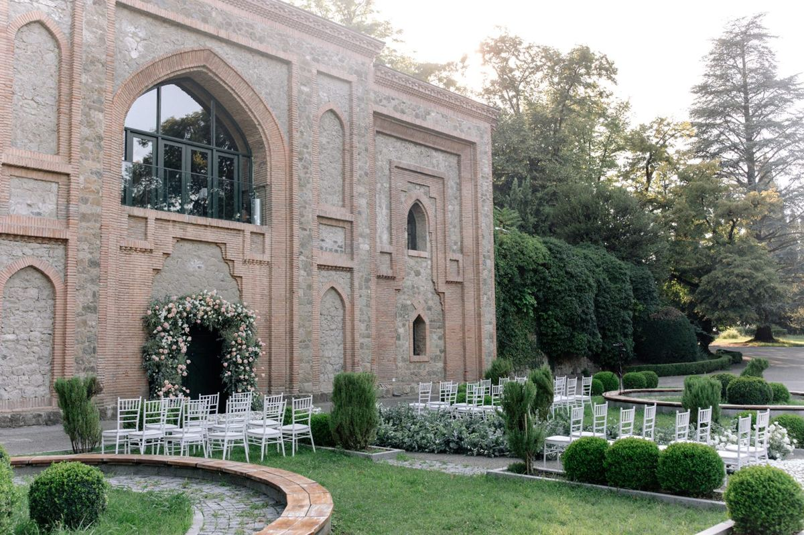
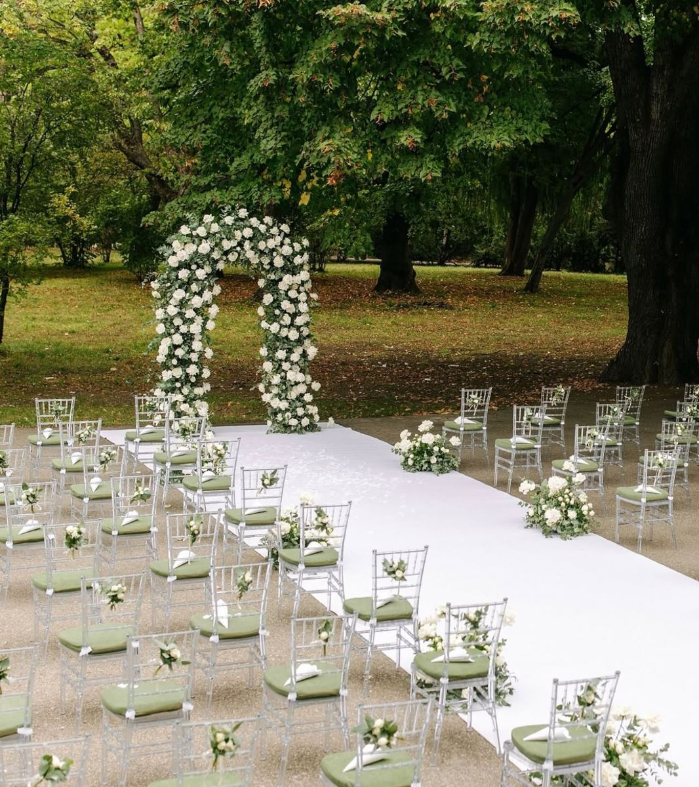
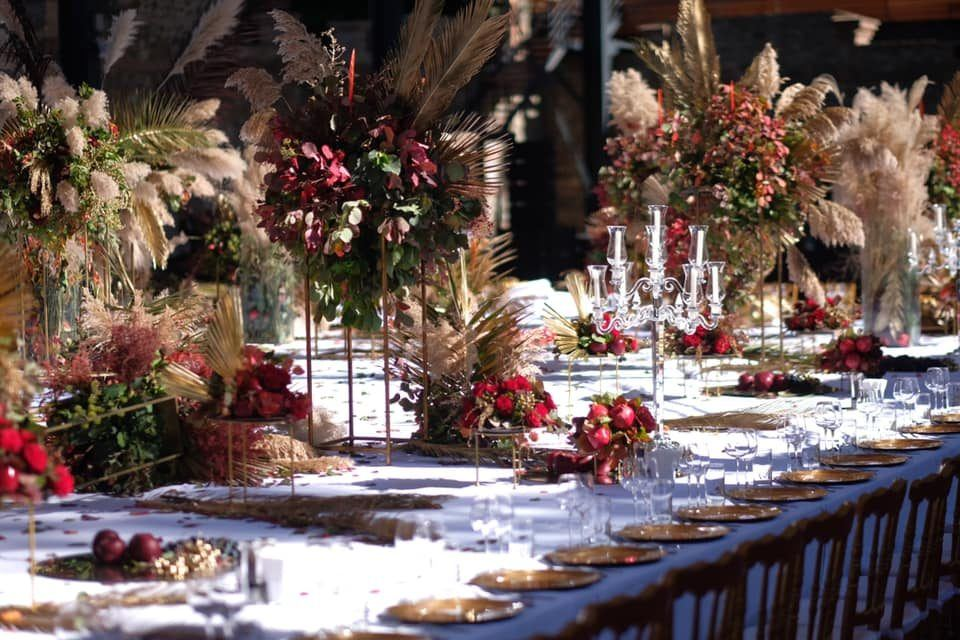
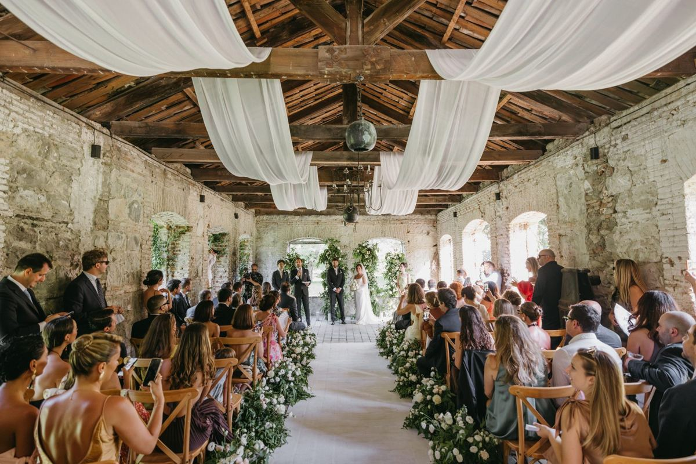
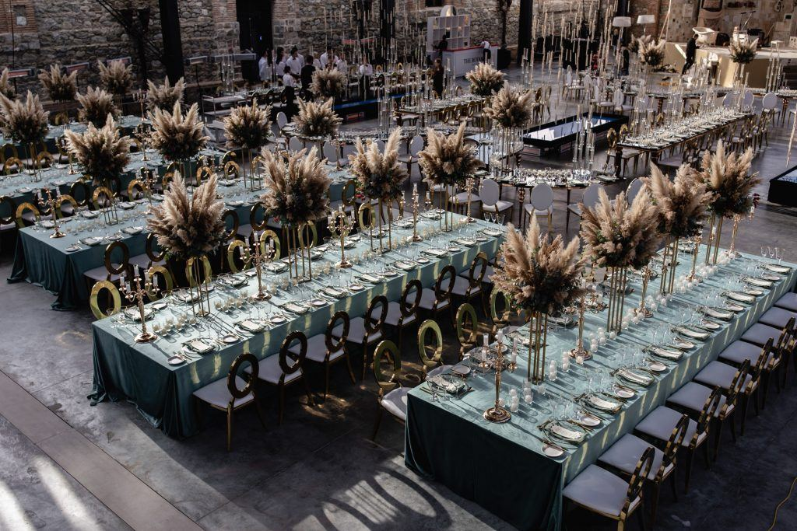
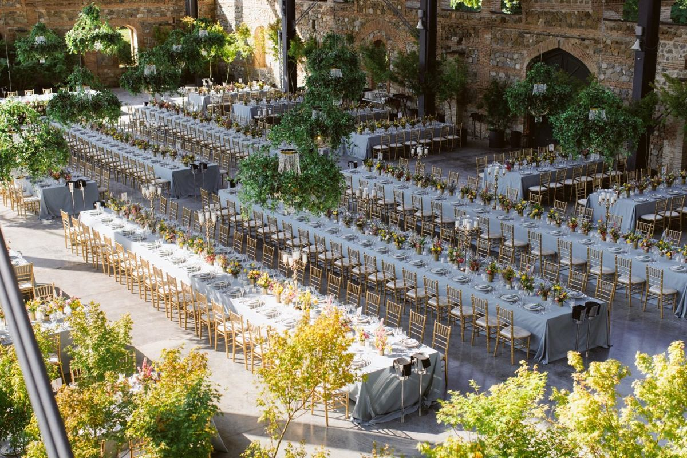
Photos courtesy of Tsinandali Estate.
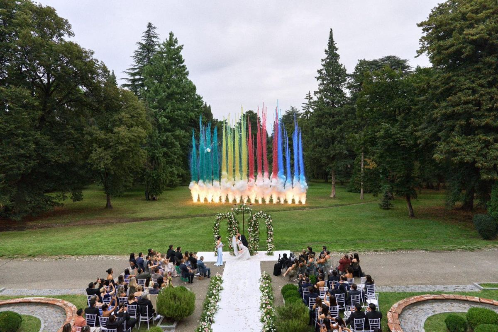
The mandap stands on open lawns in front of the palace, with the sacred fire under the sky. Outdoor ceremonies are what the estate is made for — safe, spacious, and beautiful in every photograph.
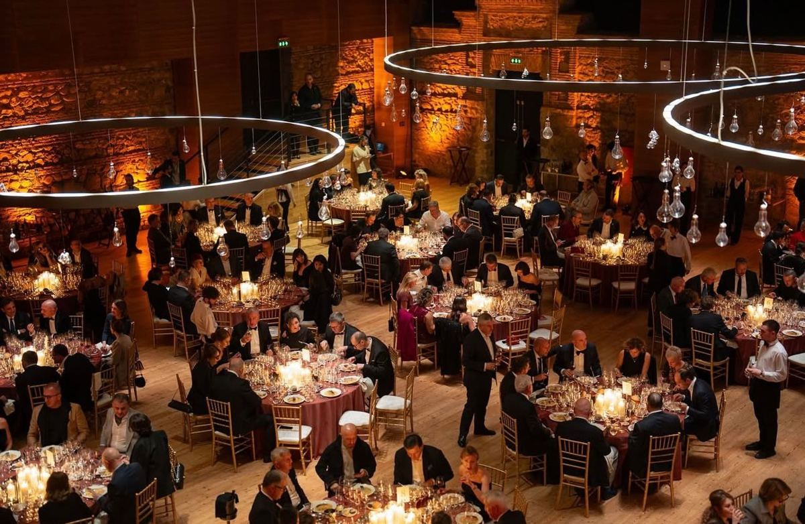
A ballroom and a grand hall for the reception, gardens and courtyards for the mehndi and sangeet. Every function gets its own space, so each day of the wedding feels different.
“Not another Udaipur or Bali — a celebration your guests will talk about for years.”
Very few Indian weddings have been held here. Your celebration feels like a discovery.
Palace grounds, vineyards and gardens, about 1.5–2 hours from Tbilisi, reserved for your family.
Short flights from Dubai and one-stop routes from Delhi and Mumbai. Indian passport holders with a valid US, UK or Schengen visa can usually enter visa-free; others can apply for an e-visa.
Georgia is known for its feasts, wine and welcome — a natural home for a three-day celebration.
Multi-day celebrations with rooms included. Flights and visas are not included. Final prices depend on date, venue and guest count.
For families who want the whole region for their wedding: palace and resort buyouts and private concerts by international stars. Typically USD 1 million to 10 million and above.
Every package includes: venue and rooms, all Indian meals, airport welcome and coaches, mandap and floral decor, pandit, mehndi artist, dhol and DJ, photographer, interpreters and our on-site coordinators.
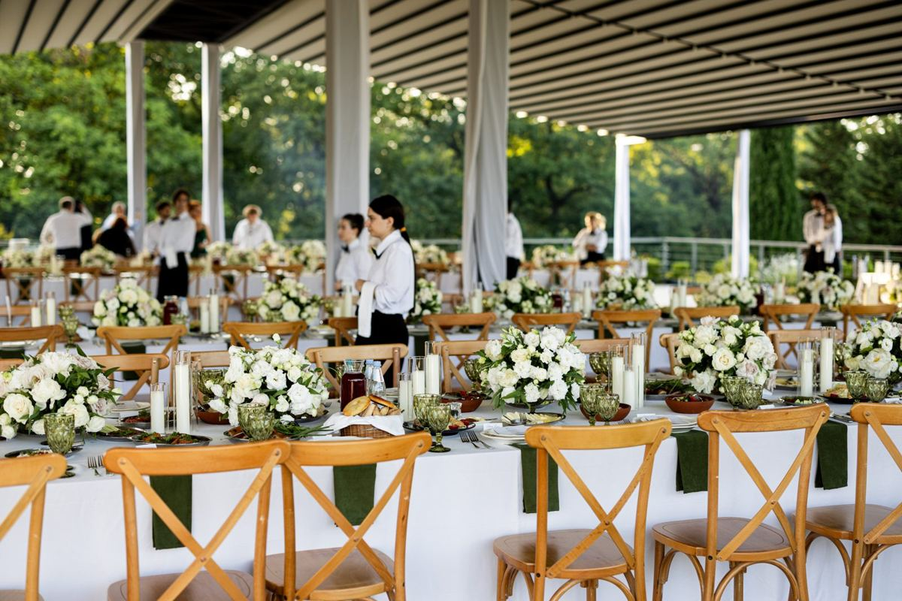
Arrival in Tbilisi and transfer to the estate. Welcome dinner in the gardens, mehndi, and a night of music and dance.
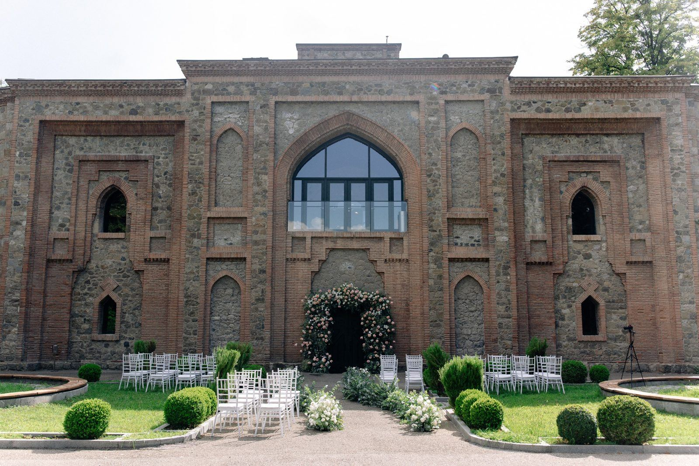
Haldi in the morning, the baraat through the grounds, pheras around the sacred fire, and the reception.
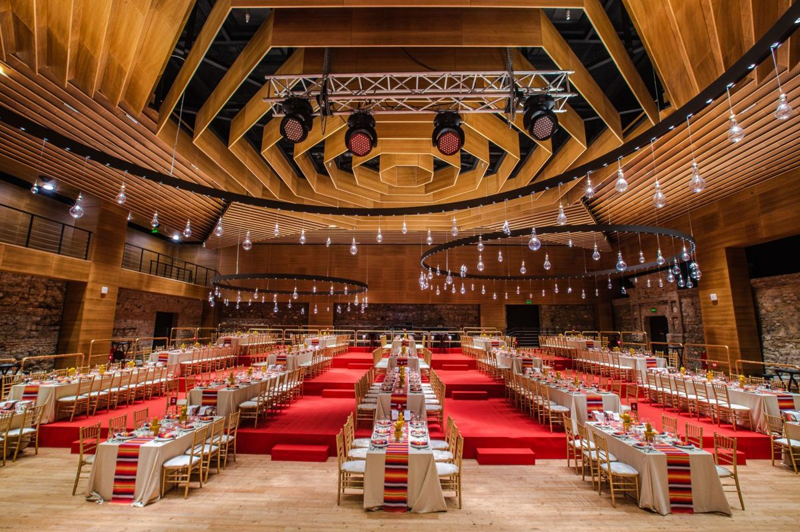
Farewell brunch, then a wine tasting in the cellars or a Tbilisi city tour before departure.
Add-ons: Georgian folk dance show · extra nights in Tbilisi · a day trip to the Kazbegi mountains
Yes. Menus are prepared with Indian chefs in Tbilisi and the venue kitchens, including vegetarian, Jain and non-vegetarian options.
Yes. Venues usually host the pheras outdoors, in the gardens or vineyards, for safety.
It depends on the venue. Some resorts end amplified music at 23:00; with a full buyout, late-night parties can often be arranged.
Yes. Many families keep their own planner for design and we act as the local team on the ground in Georgia.
There are no direct flights from India yet; Delhi and Mumbai connect through Dubai, Doha or Istanbul, with about 4.5 hours of flying time plus the connection. Return economy fares are usually around INR 40,000–90,000 per guest. Flights are not included in Classic and Signature, but our group desk can book them for your guests. All airport welcomes, coaches and transfers in Georgia are included, and Royal weddings include charter flights.
OMURICELAND LLC is a company registered in Georgia. We run a restaurant at Japan Food Hub in Tbilisi (1 Davit Gamrekeli St) and organise events and weddings with a local team of photographers, musicians, interpreters and caterers.
Share your preferred dates, guest count and city of departure. We reply within one day.
WhatsApp admin@omeletrice.comFor wedding planners: partner rates and a 2027 overview (PDF) — download.